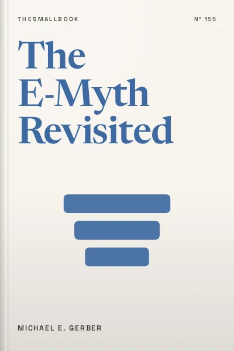

Why Did Jawbone Fail?
$3.2B Wearables Pioneer, Bled Out by Its Own Returns
📜 What Happened
Jawbone made beautiful Bluetooth headsets, speakers, and the UP fitness band - peaking at a $3.2B valuation. But the UP bands failed at scale (batteries, syncing), triggering massive returns and a legendary 'no-questions refund' that torched cash. Instead of fixing manufacturing, it litigated against Fitbit and chased new categories. Silicon Valley's second-biggest VC-backed death at the time.
☠️ The Fatal Mistake
Shipped hardware with known reliability issues to hit launch windows - then spent on lawsuits instead of quality.
🧠 The Lesson (Free for You)
In hardware, quality control IS the business model. Every defective unit ships twice: once to the customer, once back through your P&L with interest.
The Antidote Book

The Entrepreneurial Myth: that businesses are started by entrepreneurs. Reality: they're started by TECHNICIANS having an 'entrepreneurial seizure' - the baker who assumes baking skill means bakery-running skill, the…
📖 OPEN THE FULL INTERACTIVE BREAKDOWN →Questions people ask about Jawbone
Why did Jawbone fail? Shipped hardware with known reliability issues to hit launch windows - then spent on lawsuits instead of quality.
How much was lost? $930M raised → liquidation
What is the lesson? In hardware, quality control IS the business model. Every defective unit ships twice: once to the customer, once back through your P&L with interest.
Jawbone kyun fail hua? In simple English: Shipped hardware with known reliability issues to hit launch windows - then spent on lawsuits instead of quality. The cost was $930M raised → liquidation.
Keep digging
More startup failures · Open the full Graveyard
Read the antidote book summary: The E-Myth Revisited
Related failures
- Why did 23andMe fail? 2025 · 15 Million DNA Profiles, No Second Act
- Why did Vice Media fail? 2024 · The $5.7B Media Rebel That Died of Believing Its Hype
- Why did Pepperfry fail? 2024 · 10 Years of Furniture E-Commerce, Ended by a Fire Sale
- Why did Lilium Jet fail? 2024 · $1.5B Burned on 36 Electric Jet Fans
- Why did Koo fail? 2024 · India's Twitter Died Waiting for Twitter to Die
- Why did Forward Health fail? 2024 · The AI Doctor's Office Closed Overnight
Searchable, filterable, simple to read - they paid billions; you get the lesson.